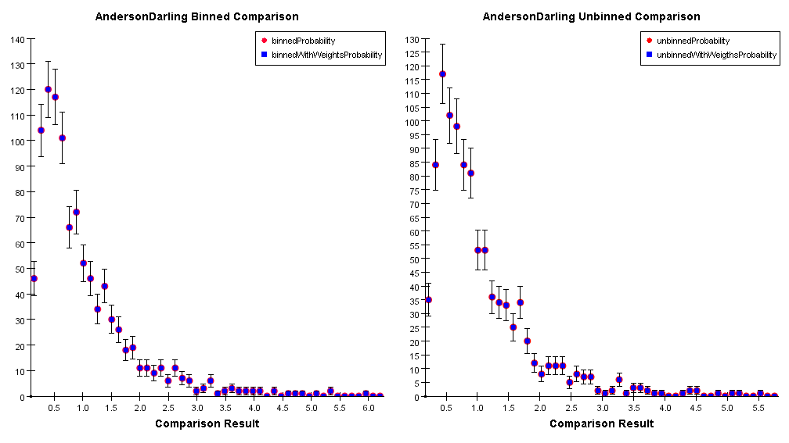
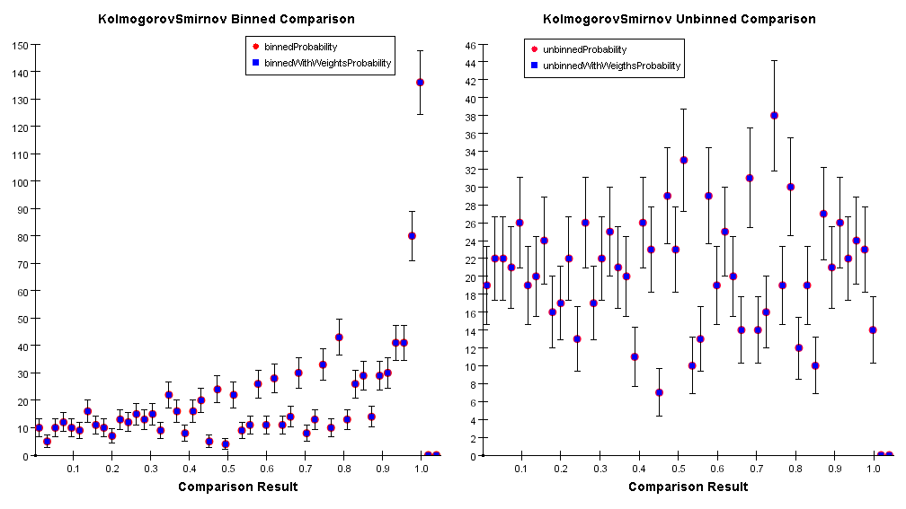
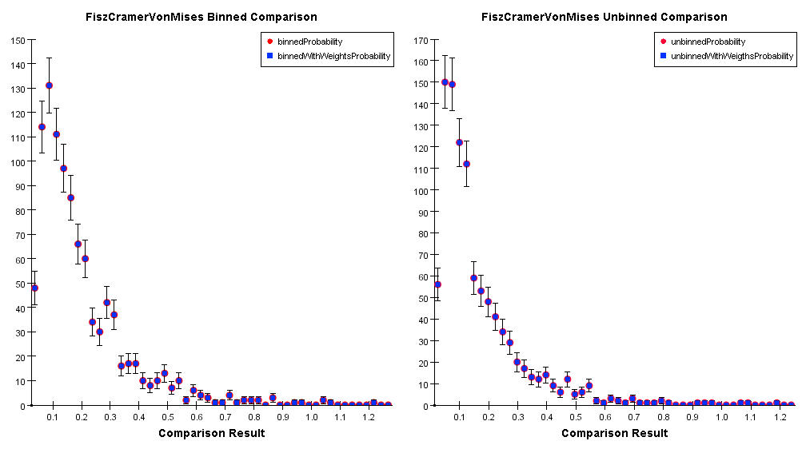
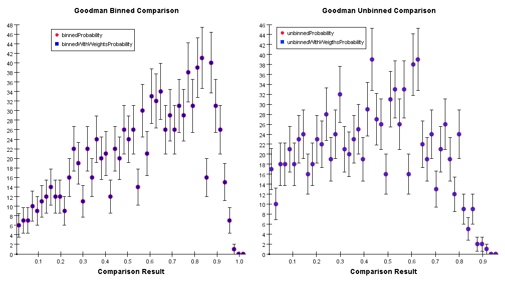
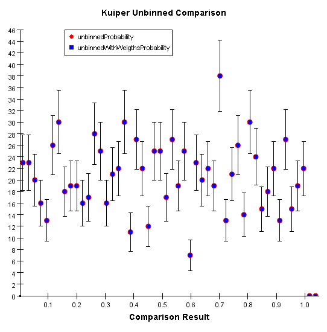
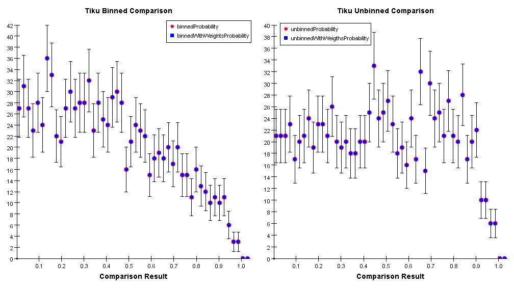
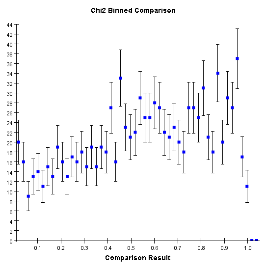

|
||||||
Statistical ComparisonIn the following we describe the statistical comparison we provide in JAIDA to assess if two data sets (either binned or unbinned) are distributed according to the same distribution. This work used as a reference the Goodness-of-Fit tests provided by the Statistical Toolkit; please refer to it for the general documentation on the comparison algorithms. The main code to perform statistical comparison is contained in the package hep.aida.util.comparison whose classes implement some of the interfaces in hep.aida.ext. Please refer to the FreeHEP API for a general overview of the available classes. Comparing DatasetsThe abstract class to perform comparisons is StatisticalComparison. It provides a set of static methods with which it is possible to compare binned and unbinned datasets. Currently it is only possible to compare IHistogram1D and ICloud1D objects. The result of such a comparison is an IComparisonResult object that contains the result of the comparison. For example: if ( StatisticalComparison.canCompare(hist1, hist2,"AD") ) //Check if the algorithm "AndersonDarling" can compare the two histograms result = StatisticalComparison.compare(hist1, hist2,"AD",""); //Compare the two histograms with the "AndersonDarling" algorithm The last argument of the compare method is an option string. Currently the only option available is "rejectionLevel" that specifies the percentage level at which a comparison is considered to have failed. The default value is 5%. Please note that not all algorithms support a continuous set of rejection levels. Not all tests give as a result a probability. Some give distributions for which rejection levels are tabulated. Please refer to the description of the algorithms to see which levels are supported. StatisticalComparison.compare(hist1, hist2,"chi2","rejectionLevel=0.01"); //Compare the two histograms with the "Chi2" algorithm with rejection level at 1%. Comparison AlgorithmsWe list here the comparison algorithms that are provided by the JAIDA implementation. Please refer to the Statistical Toolkit web page for a description of the various algorithms. For each of the comparison algorithms we provide some plots to illustrate their performance. To generate such plots we created the following sets of data:
and compared the reference data with the comparison data and the weighted data. We generate 1000 of such datasets with corresponding comparisons. From the "reference vs comparison" plot it is possible to see the probability distribution of a give algorithm and from it determine the accuracy level cut to be applied. The "reference vs weighted" plot was generated as a consistency check as it should be identical to the "reference vs comparison" for those algorithms that are testing the shape of a distribution. Anderson-DarlingThis algorithm applies to both binned and unbinned data and measures the quadratic deviation between the two distributions; below are the distributions of the comparison results for both sets of data:  The result of a comparison with the Anderson-Darling algorithm is not a probability. The rejection probability can be extrapolated by the above distributions. Currently the only tabulated (and available) rejection level is at 5% that corresponds to a comparison result value of 1.993. Kolmogorov-SmirnovIt measures the maximum vertical distance between two distributions. This algorithm should apply ONLY to unbinned data but it is commonly used for binned data as well. The outcome of a Kolmogorov-Smirnov test is a probability, whose distribution is shown below for binned and unbinned data. Please notice that in the binned case the test becomes conservative.  Fizs-Cramer-Von MisesIt also measures the quadratic deviation between two distributions. It applies to binned and unbinned data (see the distributions below).  The available tabulated rejection levels are for 10%, 5%, 1% and 0.1% that corresponds to comparison result's values of 0.347, 0.461, 0.743 and 1.168 respectively. GoodmanIt approximate the Kolmogorov-Smirnov algorithm to a chi squared statistics. Deriving from the Kolmogorov-Smirnov test it should be only applied to unbinned distributions.  KuiperIt measures the directional deviation of two distributions. It can only be applied to unbinned distributions.  TikuApproximates the Fisz-Cramer-Von Mises algorithm to a chi squared distribution.  Chi2Calculates the chi squared deviation of the two distributions. It can only be applied to binned data. This test is the only one that does apply to shapes but to the actual height of a distributions. 
|
||||||